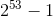

定型数组（typed array）是ECMAScript新增的结构，目的是提升向原生库传输数据的效率。实际上，JavaScript并没有“TypedArray”类型，它所指的其实是一种特殊的包含数值类型的数组。为理解如何使用定型数组，有必要先了解一下它的用途。
随着浏览器的流行，不难想象人们会满怀期待地通过它来运行复杂的3D应用程序。早在2006年，Mozilla、Opera等浏览器提供商就实验性地在浏览器中增加了用于渲染复杂图形应用程序的编程平台，无须安装任何插件。其目标是开发一套JavaScript API，从而充分利用3D图形API和GPU加速，以便在<canvas>元素上渲染复杂的图形。
WebGL
最后的JavaScript API是基于OpenGL ES（OpenGL for Embedded Systems）2.0规范的。OpenGL ES是OpenGL专注于2D和3D计算机图形的子集。这个新API被命名为WebGL（Web Graphics Library），于2011年发布1.0版。有了它，开发者就能够编写涉及复杂图形的应用程序，它会被兼容WebGL的浏览器原生解释执行。
在WebGL的早期版本中，因为JavaScript数组与原生数组之间不匹配，所以出现了性能问题。图形驱动程序API通常不需要以JavaScript默认双精度浮点格式传递给它们的数值，而这恰恰是JavaScript数组在内存中的格式。因此，每次WebGL与JavaScript运行时之间传递数组时，WebGL绑定都需要在目标环境分配新数组，以其当前格式迭代数组，然后将数值转型为新数组中的适当格式，而这些要花费很多时间。
定型数组
这当然是难以接受的，Mozilla为解决这个问题而实现了CanvasFloatArray。这是一个提供JavaScript接口的、C语言风格的浮点值数组。JavaScript运行时使用这个类型可以分配、读取和写入数组。这个数组可以直接传给底层图形驱动程序API，也可以直接从底层获取到。最终，CanvasFloatArray变成了Float32Array，也就是今天定型数组中可用的第一个“类型”。
ArrayBuffer
Float32Array实际上是一种“视图”，可以允许JavaScript运行时访问一块名为ArrayBuffer的预分配内存。ArrayBuffer是所有定型数组及视图引用的基本单位。
注意
SharedArrayBuffer是ArrayBuffer的一个变体，可以无须复制就在执行上下文间传递它。关于这种类型，请参考第27章。
ArrayBuffer()是一个普通的JavaScript构造函数，可用于在内存中分配特定数量的字节空间。
const buf = new arraybuffer(16); // 在内存中分配16字节
alert(buf.bytelength); // 16
ArrayBuffer一经创建就不能再调整大小。不过，可以使用slice()复制其全部或部分到一个新实例中：
const buf1 = new arraybuffer(16);
const buf2 = buf1.slice(4, 12);
alert(buf2.bytelength); // 8
ArrayBuffer某种程度上类似于C++的malloc()，但也有几个明显的区别。
malloc()在分配失败时会返回一个null指针。ArrayBuffer在分配失败时会抛出错误。malloc()可以利用虚拟内存，因此最大可分配尺寸只受可寻址系统内存限制。ArrayBuffer分配的内存不能超过Number.MAX_SAFE_INTEGER（）字节。malloc()调用成功不会初始化实际的地址。声明ArrayBuffer则会将所有二进制位初始化为0。malloc()分配的堆内存除非调用free()或程序退出，否则系统不能再使用。而通过声明ArrayBuffer分配的堆内存可以被当成垃圾回收，不用手动释放。不能仅通过对ArrayBuffer的引用就读取或写入其内容。要读取或写入ArrayBuffer，就必须通过视图。视图有不同的类型，但引用的都是ArrayBuffer中存储的二进制数据。
DataView
第一种允许你读写ArrayBuffer的视图是DataView。这个视图专为文件I/O和网络I/O设计，其API支持对缓冲数据的高度控制，但相比于其他类型的视图性能也差一些。DataView对缓冲内容没有任何预设，也不能迭代。
必须在对已有的ArrayBuffer读取或写入时才能创建DataView实例。这个实例可以使用全部或部分ArrayBuffer，且维护着对该缓冲实例的引用，以及视图在缓冲中开始的位置。
const buf = new arraybuffer(16);
// dataview默认使用整个arraybuffer
const fulldataview = new dataview(buf);
alert(fulldataview.byteoffset); // 0
alert(fulldataview.bytelength); // 16
alert(fulldataview.buffer === buf); // true
// 构造函数接收一个可选的字节偏移量和字节长度
// byteoffset=0表示视图从缓冲起点开始
// bytelength=8限制视图为前8个字节
const firsthalfdataview = new dataview(buf, 0, 8);
alert(firsthalfdataview.byteoffset); // 0
alert(firsthalfdataview.bytelength); // 8
alert(firsthalfdataview.buffer === buf); // true
// 如果不指定，则dataview会使用剩余的缓冲
// byteoffset=8表示视图从缓冲的第9个字节开始
// bytelength未指定，默认为剩余缓冲
const secondhalfdataview = new dataview(buf, 8);
alert(secondhalfdataview.byteoffset); // 8
alert(secondhalfdataview.bytelength); // 8
alert(secondhalfdataview.buffer === buf); // true要通过DataView读取缓冲，还需要几个组件。
• 首先是要读或写的字节偏移量。可以看成DataView中的某种“地址”。
•
DataView应该使用ElementType来实现JavaScript的Number类型到缓冲内二进制格式的转换。
• 最后是内存中值的字节序。默认为大端字节序。
ElementType
DataView对存储在缓冲内的数据类型没有预设。它暴露的API强制开发者在读、写时指定一个ElementType，然后DataView就会忠实地为读、写而完成相应的转换。
ECMAScript 6支持8种不同的ElementType（见下表）。
ElementType
|
字节 | 说明 | 等价的C类型 | 值的范围 |
|---|---|---|---|---|
Int8
|
1 | 8位有符号整数 |
signed char
|
-128~127 |
Uint8
|
1 | 8位无符号整数 |
unsigned char
|
0~255 |
Int16
|
2 | 16位有符号整数 |
short
|
-32 768~32 767 |
Uint16
|
2 | 16位无符号整数 |
unsigned short
|
0~65 535 |
Int32
|
4 | 32位有符号整数 |
int
|
-2 147 483 648~2 147 483 647 |
Uint32
|
4 | 32位无符号整数 |
unsigned int
|
0~4 294 967 295 |
Float32
|
4 | 32位IEEE-754浮点数 |
float
|
-3.4e+38~+3.4e+38 |
Float64
|
8 | 64位IEEE-754浮点数 |
double
|
-1.7e+308~+1.7e+308 |
DataView为上表中的每种类型都暴露了get和set方法，这些方法使用byteOffset（字节偏移量）定位要读取或写入值的位置。类型是可以互换使用的，如下例所示：
// 在内存中分配两个字节并声明一个dataview
const buf = new arraybuffer(2);
const view = new dataview(buf);
// 说明整个缓冲确实所有二进制位都是0
// 检查第一个和第二个字符
alert(view.getint8(0)); // 0
alert(view.getint8(1)); // 0
// 检查整个缓冲
alert(view.getint16(0)); // 0
// 将整个缓冲都设置为1
// 255的二进制表示是11111111（2^8 - 1）
view.setuint8(0, 255);
// dataview会自动将数据转换为特定的elementtype
// 255的十六进制表示是0xff
view.setuint8(1, 0xff);
// 现在，缓冲里都是1了
// 如果把它当成二补数的有符号整数，则应该是-1
alert(view.getint16(0)); // -1字节序
前面例子中的缓冲有意回避了字节序的问题。“字节序”指的是计算系统维护的一种字节顺序的约定。DataView只支持两种约定：大端字节序和小端字节序。大端字节序也称为“网络字节序”，意思是最高有效位保存在第一个字节，而最低有效位保存在最后一个字节。小端字节序正好相反，即最低有效位保存在第一个字节，最高有效位保存在最后一个字节。
JavaScript运行时所在系统的原生字节序决定了如何读取或写入字节，但DataView并不遵守这个约定。对一段内存而言，DataView是一个中立接口，它会遵循你指定的字节序。DataView的所有API方法都以大端字节序作为默认值，但接收一个可选的布尔值参数，设置为true即可启用小端字节序。
// 在内存中分配两个字节并声明一个dataview
const buf = new arraybuffer(2);
const view = new dataview(buf);
// 填充缓冲，让第一位和最后一位都是1
view.setuint8(0, 0x80); // 设置最左边的位等于1
view.setuint8(1, 0x01); // 设置最右边的位等于1
// 缓冲内容（为方便阅读，人为加了空格）
// 0x8 0x0 0x0 0x1
// 1000 0000 0000 0001
// 按大端字节序读取uint16
// 0x80是高字节，0x01是低字节
// 0x8001 = 2^15 + 2^0 = 32768 + 1 = 32769
alert(view.getuint16(0)); // 32769
// 按小端字节序读取uint16
// 0x01是高字节，0x80是低字节
// 0x0180 = 2^8 + 2^7 = 256 + 128 = 384
alert(view.getuint16(0, true)); // 384
// 按大端字节序写入uint16
view.setuint16(0, 0x0004);
// 缓冲内容（为方便阅读，人为加了空格）
// 0x0 0x0 0x0 0x4
// 0000 0000 0000 0100
alert(view.getuint8(0)); // 0
alert(view.getuint8(1)); // 4
// 按小端字节序写入uint16
view.setuint16(0, 0x0002, true);
// 缓冲内容（为方便阅读，人为加了空格）
// 0x0 0x2 0x0 0x0
// 0000 0010 0000 0000
alert(view.getuint8(0)); // 2
alert(view.getuint8(1)); // 0边界情形
DataView完成读、写操作的前提是必须有充足的缓冲区，否则就会抛出RangeError：
const buf = new arraybuffer(6);
const view = new dataview(buf);
// 尝试读取部分超出缓冲范围的值
view.getint32(4);
// rangeerror
// 尝试读取超出缓冲范围的值
view.getint32(8);
// rangeerror
// 尝试读取超出缓冲范围的值
view.getint32(-1);
// rangeerror
// 尝试写入超出缓冲范围的值
view.setint32(4, 123);
// rangeerror
DataView在写入缓冲里会尽最大努力把一个值转换为适当的类型，后备为0。如果无法转换，则抛出错误：
const buf = new arraybuffer(1);
const view = new dataview(buf);
view.setint8(0, 1.5);
alert(view.getint8(0)); // 1
view.setint8(0, [4]);
alert(view.getint8(0)); // 4
view.setint8(0, 'f');
alert(view.getint8(0)); // 0
view.setint8(0, symbol());
// typeerror定型数组是另一种形式的ArrayBuffer视图。虽然概念上与DataView接近，但定型数组的区别在于，它特定于一种ElementType且遵循系统原生的字节序。相应地，定型数组提供了适用面更广的API和更高的性能。设计定型数组的目的就是提高与WebGL等原生库交换二进制数据的效率。由于定型数组的二进制表示对操作系统而言是一种容易使用的格式，JavaScript引擎可以重度优化算术运算、按位运算和其他对定型数组的常见操作，因此使用它们速度极快。
创建定型数组的方式包括读取已有的缓冲、使用自有缓冲、填充可迭代结构，以及填充基于任意类型的定型数组。另外，通过<ElementType>.from()和<ElementType>.of()也可以创建定型数组：
// 创建一个12字节的缓冲
const buf = new arraybuffer(12);
// 创建一个引用该缓冲的int32array
const ints = new int32array(buf);
// 这个定型数组知道自己的每个元素需要4字节
// 因此长度为3
alert(ints.length); // 3
// 创建一个长度为6的int32array
const ints2 = new int32array(6);
// 每个数值使用4字节，因此arraybuffer是24字节
alert(ints2.length); // 6
// 类似dataview，定型数组也有一个指向关联缓冲的引用
alert(ints2.buffer.bytelength); // 24
// 创建一个包含[2, 4, 6, 8]的int32array
const ints3 = new int32array([2, 4, 6, 8]);
alert(ints3.length); // 4
alert(ints3.buffer.bytelength); // 16
alert(ints3[2]); // 6
// 通过复制ints3的值创建一个int16array
const ints4 = new int16array(ints3);
// 这个新类型数组会分配自己的缓冲
// 对应索引的每个值会相应地转换为新格式
alert(ints4.length); // 4
alert(ints4.buffer.bytelength); // 8
alert(ints4[2]); // 6
// 基于普通数组来创建一个int16array
const ints5 = int16array.from([3, 5, 7, 9]);
alert(ints5.length); // 4
alert(ints5.buffer.bytelength); // 8
alert(ints5[2]); // 7
// 基于传入的参数创建一个float32array
const floats = float32array.of(3.14, 2.718, 1.618);
alert(floats.length); // 3
alert(floats.buffer.bytelength); // 12
alert(floats[2]); // 1.6180000305175781定型数组的构造函数和实例都有一个BYTES_PER_ELEMENT属性，返回该类型数组中每个元素的大小：
alert(int16array.bytes_per_element); // 2
alert(int32array.bytes_per_element); // 4
const ints = new int32array(1),
floats = new float64array(1);
alert(ints.bytes_per_element); // 4
alert(floats.bytes_per_element); // 8如果定型数组没有用任何值初始化，则其关联的缓冲会以0填充：
const ints = new int32array(4);
alert(ints[0]); // 0
alert(ints[1]); // 0
alert(ints[2]); // 0
alert(ints[3]); // 0定型数组行为
从很多方面看，定型数组与普通数组都很相似。定型数组支持如下操作符、方法和属性：
[]
copyWithin()
entries()
every()
fill()
filter()
find()
findIndex()
forEach()
indexOf()
join()
keys()
lastIndexOf()
length
map()
reduce()
reduceRight()
reverse()
slice()
some()
sort()
toLocaleString()
toString()
values()
其中，返回新数组的方法也会返回包含同样元素类型（element type）的新定型数组：
const ints = new int16array([1, 2, 3]);
const doubleints = ints.map(x => 2*x);
alert(doubleints instanceof int16array); // true定型数组有一个Symbol.iterator符号属性，因此可以通过for..of循环和扩展操作符来操作：
const ints = new int16array([1, 2, 3]);
for (const int of ints) {
alert(int);
}
// 1
// 2
// 3
alert(math.max(...ints)); // 3合并、复制和修改定型数组
定型数组同样使用数组缓冲来存储数据，而数组缓冲无法调整大小。因此，下列方法不适用于定型数组：
concat()
pop()
push()
shift()
splice()
unshift()
不过，定型数组也提供了两个新方法，可以快速向外或向内复制数据：set()和subarray()。
set()从提供的数组或定型数组中把值复制到当前定型数组中指定的索引位置：
// 创建长度为8的int16数组
const container = new int16array(8);
// 把定型数组复制为前4个值
// 偏移量默认为索引0
container.set(int8array.of(1, 2, 3, 4));
console.log(container); // [1,2,3,4,0,0,0,0]
// 把普通数组复制为后4个值
// 偏移量4表示从索引4开始插入
container.set([5,6,7,8], 4);
console.log(container); // [1,2,3,4,5,6,7,8]
// 溢出会抛出错误
container.set([5,6,7,8], 7);
// rangeerror
subarray()执行与set()相反的操作，它会基于从原始定型数组中复制的值返回一个新定型数组。复制值时的开始索引和结束索引是可选的：
const source = int16array.of(2, 4, 6, 8);
// 把整个数组复制为一个同类型的新数组
const fullcopy = source.subarray();
console.log(fullcopy); // [2, 4, 6, 8]
// 从索引2开始复制数组
const halfcopy = source.subarray(2);
console.log(halfcopy); // [6, 8]
// 从索引1开始复制到索引3
const partialcopy = source.subarray(1, 3);
console.log(partialcopy); // [4, 6]定型数组没有原生的拼接能力，但使用定型数组API提供的很多工具可以手动构建：
// 第一个参数是应该返回的数组类型
// 其余参数是应该拼接在一起的定型数组
function typedarrayconcat(typedarrayconstructor, ...typedarrays) {
// 计算所有数组中包含的元素总数
const numelements = typedarrays.reduce((x,y) => (x.length || x) + y.length);
// 按照提供的类型创建一个数组，为所有元素留出空间
const resultarray = new typedarrayconstructor(numelements);
// 依次转移数组
let currentoffset = 0;
typedarrays.map(x => {
resultarray.set(x, currentoffset);
currentoffset += x.length;
});
return resultarray;
}
const concatarray = typedarrayconcat(int32array,
int8array.of(1, 2, 3),
int16array.of(4, 5, 6),
float32array.of(7, 8, 9));
console.log(concatarray); // [1, 2, 3, 4, 5, 6, 7, 8, 9]
console.log(concatarray instanceof int32array); // true下溢和上溢
定型数组中值的下溢和上溢不会影响到其他索引，但仍然需要考虑数组的元素应该是什么类型。定型数组对于可以存储的每个索引只接受一个相关位，而不考虑它们对实际数值的影响。以下代码演示了如何处理下溢和上溢：
// 长度为2的有符号整数数组
// 每个索引保存一个二补数形式的有符号整数
// 范围是-128（-1 * 2^7）~127（2^7 - 1）
const ints = new int8array(2);
// 长度为2的无符号整数数组
// 每个索引保存一个无符号整数
// 范围是0~255（2^7 - 1）
const unsignedints = new uint8array(2);
// 上溢的位不会影响相邻索引
// 索引只取最低有效位上的8位
unsignedints[1] = 256; // 0x100
console.log(unsignedints); // [0, 0]
unsignedints[1] = 511; // 0x1ff
console.log(unsignedints); // [0, 255]
// 下溢的位会被转换为其无符号的等价值
// 0xff是以二补数形式表示的-1（截取到8位）,
// 但255是一个无符号整数
unsignedints[1] = -1 // 0xff (truncated to 8 bits)
console.log(unsignedints); // [0, 255]
// 上溢自动变成二补数形式
// 0x80是无符号整数的128，是二补数形式的-128
ints[1] = 128; // 0x80
console.log(ints); // [0, -128]
// 下溢自动变成二补数形式
// 0xff是无符号整数的255，是二补数形式的-1
ints[1] = 255; // 0xff
console.log(ints); // [0, -1]除了8种元素类型，还有一种“夹板”数组类型：Uint8ClampedArray，不允许任何方向溢出。超出最大值255的值会被向下舍入为255，而小于最小值0的值会被向上舍入为0。
const clampedints = new uint8clampedarray([-1, 0, 255, 256]);
console.log(clampedints); // [0, 0, 255, 255]按照JavaScript之父Brendan Eich的说法：“Uint8ClampedArray完全是HTML5canvas元素的历史留存。除非真的做跟canvas相关的开发，否则不要使用它。”